34 directions, each at 112, 40, 24, and 16 px. Pick by number, or remix (“14 with 08’s eyes”).
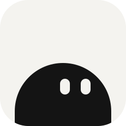
01 · Peek · paperThe original: ink Remy on paper white.
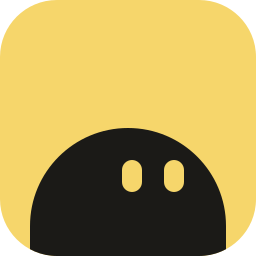
02 · Peek · butterOne warm brand color.
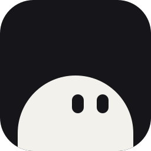
03 · Peek · nightDark tile, light Remy.
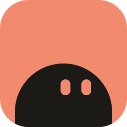
04 · Peek · coralWarmer, more energetic.
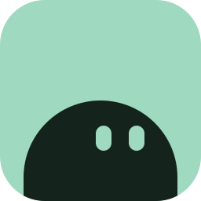
05 · Peek · mintCalm and fresh.
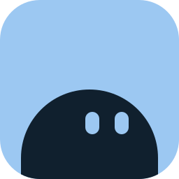
06 · Peek · skySoft, open, trusted.
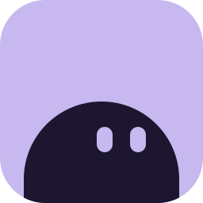
07 · Peek · lilacGentle, a little dreamy.
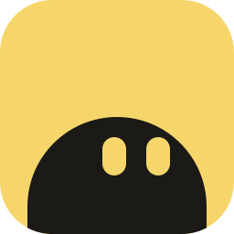
08 · Peek · curiousBigger eyes: alert and attentive.
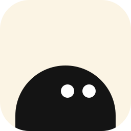
09 · Peek · round eyesClassic round eyes, softer.
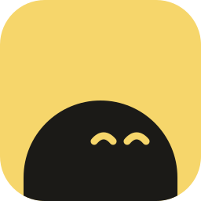
10 · Peek · contentHappy closed eyes: “I’ve got it.”
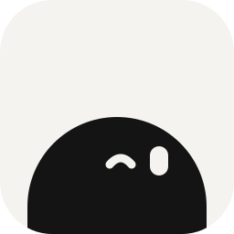
11 · Peek · winkA wink, playful.
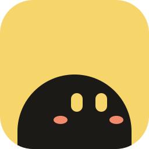
12 · Peek · blushRosy cheeks: extra friendly.
A face whose smile is a check.
The same smile, warm tile.
More energy.
Outline version: lighter.
Winking, playful.
Dark mode.
R whose leg becomes a check.
An R that looks back at you.
R plus a red “due” dot.
Lowercase r as a little character.
A speech bubble with eyes: you talk, Remy listens.
A stacked widget card with a face.
A calendar with ears and a smile.
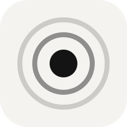
26 · PingA gentle notification ripple.
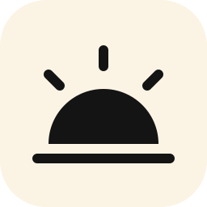
27 · SunriseIt comes up on its day.
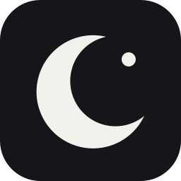
28 · LaterMoon and star: saved for later.
Your agent sends it, it lands.
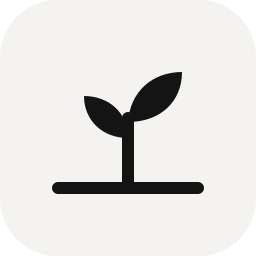
30 · SproutA seed that sprouts on its day.
You say it, it becomes a note.
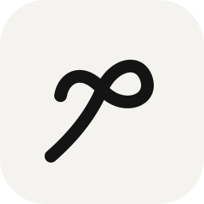
32 · KnotThe string-on-your-finger reminder.
A ribbon that marks the day.
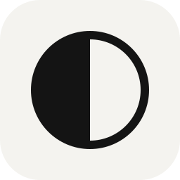
34 · Now & laterHalf now, half waiting.